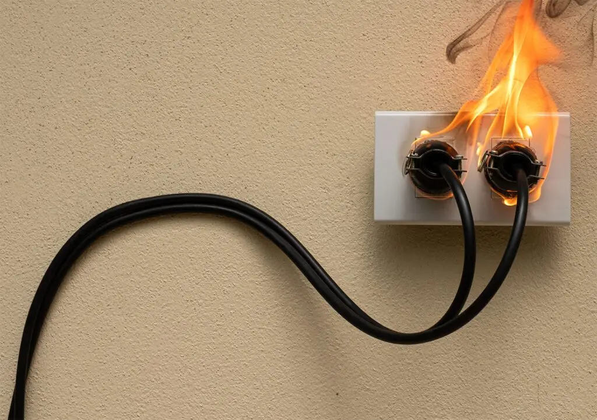

SOBRE NANO-NEX
EMPRESA DE LIMPIEZA DE INCENDIOS
En NANO NEX, comprendemos el impacto devastador de un incendio. El fuego y el humo pueden transformar su hogar o negocio en un lugar inhóspito. Tras un incendio, nuestro equipo está listo, con experiencia y pasión, para limpiar y limpiar su espacio con rapidez. Los expertos de NANO NEX se especializan en la limpieza de daños por fuego, trabajando con dedicación para devolverle a su hogar o negocio su esencia original en pocos días, como un renacer que trae esperanza y claridad.

¿Necesitas una limpieza de Incendios?
Limpieza con lázer . Limpieza Criogénicas . Hielo seco . Eliminación de olores . Vertidos accidentales . Olor de humedad
Nº1 EN SERVICIOS DE LIMPIEZA
¿Ha Sufrido Un Incendio En Su Casa O Taller?
Los incendios dejan tras de sí daños materiales profundos y complejos, pero en Nano Nex transformamos esa adversidad en una oportunidad de renacimiento. Nuestros servicios de limpieza de incendios están diseñados con el corazón y la precisión para devolver a cada espacio un brillo igual o superior al que tenía antes del siniestro.
En Nano Nex, llevamos más de 20 años acompañando a nuestros clientes, siendo su primera elección gracias a nuestra pasión por limpiar y renovar. Nuestra misión es seguir siendo un faro de confianza y excelencia.
Ofrecemos servicios de limpieza y mantenimiento para todo tipo de edificios, desde espacios comerciales hasta oficinas privadas e instalaciones industriales, llevando la renovación a cada rincón con un propósito claro.
En Nano Nex, nuestro equipo de profesionales altamente capacitados aborda cada caso con un enfoque único, aplicando tratamientos precisos y tecnologías avanzadas, como la limpieza con láser, para maximizar resultados mientras cuidamos el medio ambiente con respeto y compromiso.
La limpieza post incendio es un proceso de recuperación profundo, donde rescatamos tus pertenencias afectadas por el fuego —objetos, paredes, fachadas, azulejos, muebles— y eliminamos los daños causados por el humo. Nos encargamos de retirar escombros y elementos irrecuperables, despejando el camino para una limpieza impecable. Además, neutralizamos los olores del humo y limpiamos los daños con dedicación, utilizando la maquinaria específica que cada espacio requiere.
Cuando ofrecemos nuestros servicios de limpieza de incendios, ponemos el alma en cada detalle, empleando tecnologías de vanguardia como la ionización, el chorro de arena, bombas de aplicación y, cuando es necesario, la limpieza con láser, para garantizar la máxima calidad en cada superficie afectada.
El tiempo es clave: reducir el intervalo entre el incendio y la limpieza post incendio es esencial para preservar lo que más valoras.
Confía en Nano Nex para la limpieza completa de las zonas dañadas. Con nuestra limpieza de incendios, te aseguramos un retorno a la normalidad, poniendo todo nuestro esfuerzo para que tu espacio recupere su luz y su vida. ¡Es el momento de renacer!
¿Cuál es el proceso de limpieza de daños por incendios?
Paso 1: Conectar con NANO NEX
Comienza el camino hacia la recuperación llamando a nuestro centro de atención al cliente, disponible las 24 horas. Con empatía y cuidado, te haremos preguntas clave sobre los daños del incendio, guiándote para evaluar la situación y enviar a los expertos de NANO NEX con las herramientas y el compromiso necesarios para devolverle vida a tu espacio.
Paso 2: Evaluación cuidadosa de los daños
Nuestros profesionales recorrerán con atención cada rincón de tu propiedad, examinando el alcance del fuego, el humo y el hollín. Este paso es el cimiento para trazar un plan de acción que transforme la adversidad en un nuevo comienzo.
Paso 3: Protección con lona
Los incendios suelen dejar vulnerables ventanas, paredes y techos. Para resguardar tu hogar o negocio y prevenir más daños, nuestros técnicos cubrirán con lonas las áreas expuestas, protegiendo con dedicación lo que más valoras.
Paso 4: Eliminación del agua y secado (si hay daños por agua)
Actuamos con rapidez para retirar el agua acumulada, iniciando el proceso casi de inmediato. Luego, con deshumidificadores y ventiladores, completamos el secado, asegurando que cada espacio quede listo para renacer sin huellas de humedad.
Paso 5: Liberar las superficies de humo y hollín
En NANO NEX, nuestros especialistas emplean técnicas avanzadas y equipos especializados, incluyendo la limpieza con láser cuando es necesario, para eliminar los olores a humo y hollín de techos, paredes y otras superficies, devolviéndoles su pureza con un cuidado que inspira.
Paso 6: Limpieza y renovación profunda
limpiamos cada elemento reparable y las estructuras afectadas por el fuego con un enfoque lleno de propósito. Aplicamos diversas técnicas de limpieza, desde métodos tradicionales hasta tecnologías como generadores de ozono y nebulizadores, para neutralizar olores y devolver a tu propiedad su estado original, como un lienzo listo para nuevas historias.
Paso 7: limpieza completa
El último paso es el renacimiento de tu hogar o negocio. La limpieza puede abarcar desde pequeñas reparaciones, como reemplazar paneles de yeso, pintar o instalar alfombras nuevas, hasta proyectos mayores, como reconstruir áreas completas. En NANO NEX, trabajamos con pasión para que tu espacio recupere su luz y su vida, como si el incendio nunca hubiera ocurrido.
SOBRE NANO-NEX
Ejemplo de APLICACIONES Y RESULTADOS
Limpieza con lázer . Limpieza Criogénicas . Hielo seco . Eliminación de olores . Vertidos accidentales . Olor de humedad